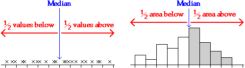

Median
The two most commonly used measures of centre in a data set are the median and mean.
The median is one of the values displayed in a box plot; it is the middle value in a batch, so the same number of values is above and below it. (If the number of values is even, the median is defined to be half way between the two middle values.)

Mean
The mean of a data set is found by adding all the values, then dividing by the number of values, n.

The best way to understand how the mean behaves is to imagine each cross on an unjittered dot plot to be a solid object resting on a beam with negligible mass.
The mean is the value at which the beam will balance.
Software support time
The diagram below shows the times (in minutes) for a company to deal with queries about an accounting package that it sells.
Drag the red arrow to change the value of k. When the beam is balanced, k is equal to the mean.
Sunshine hours
Solar cookers are potentially a cheap and environmentally friendly alternative to wood in the developing world. As part of a study of their potential in Botswana, data were collected on the number of sunshine hours in Gaborone. The diagram below shows the total sunshine hours on 25th February each year from 1978 to 1997.
This data set has a skew distribution with a long tail to the left. The point of balance, and hence the mean, are strongly affected by the two years (1980 and 1985) when there were less than 7 sunshine hours.
Drag the red arrow to find the point of balance (i.e the mean) and observe that only 7 of the 20 values are less than the mean.
For a skew distribution such as this, the mean is further into the long tail than you might have expected!